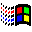
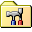
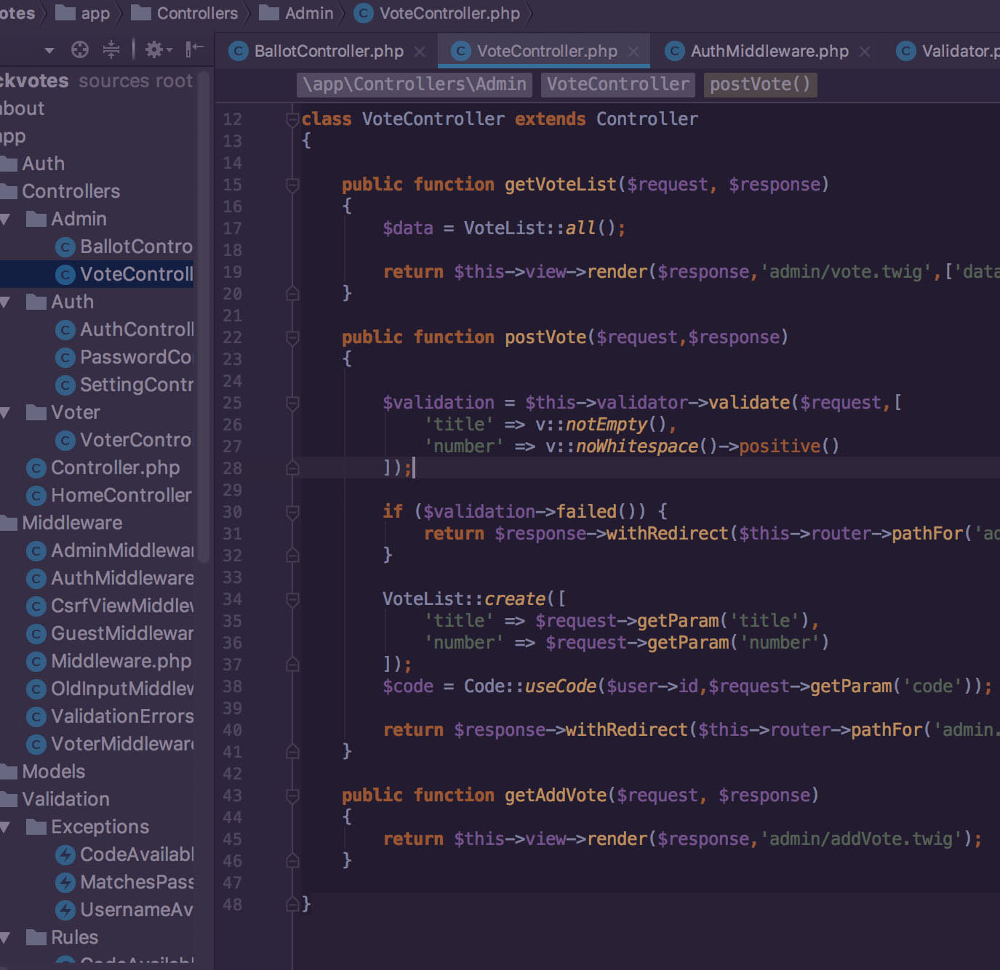
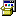
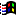
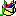
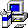

2022.01
至今
至今
中国建设银行总行 · 金融科技部
AI 安全负责人
- 负责集团网络安全架构设计、安全治理落地及重点专项统筹。
- 主导人工智能内生安全与 AI 赋能网络安全能力规划和落地。
- 建立 API 安全风险监测体系，推动高风险接口治理闭环。
- 负责安全应急响应与事件溯源，推动业务和技术侧措施优化。

要开始使用，请单击您的用户名
WELCOME TO YFGEEK.COM
极客凡，INTJ，程序员出身，现在主攻网络安全与人工智能安全。智能家居和数码控，爱折腾，永远在尝试新东西。
走南闯北，环游世界的同时，偶尔也写点 bug。
USER PROFILE / VERIFIED

控制面板 - 专业技能选择一个类别，查看已安装的专业能力：
安全架构、网络安全、应用安全、数据安全、API 安全、渗透测试、应急响应
大模型安全、智能体安全、提示注入防御、越狱检测、模型应用防护、风险评估
系统架构、加密算法、微服务框架、安全通信协议、渠道风控
人工智能安全、区块链、开放银行、金融科技、金融级 API 开放生态
网络安全 · 人工智能安全 · 金融科技
ABOUT YFGEEK
对美食、旅游、政治、历史、文化以及任何新生事物感兴趣，对任何技术充满敬畏之心。

曾经的 OIer，喜欢研究算法。从小到大接触过 PHP、Java、Python、Golang 等编程语言，前端偏爱 React 系列。
基于 Raspberry Pi、DHT11/DHT22 与 LCD1602 的实时温湿度监测系统，并提供 React 重构版本。
随着互联网的发展，我这一代人也长大了。
时间维度很宽广，而喜爱技术的我，一直都在。
不忘初心，追随内心。
Microsoft Windows 2000 风格个人简历
注册用户：极客凡
系统角色：yfgeek
版本：1.0.1

属性回收站是空的。
正在准备浏览网页...
这是第一次启动 Internet Explorer。选择一次后，系统会记住您的设置。
以后可在 Internet Explorer 的“工具”菜单中重新选择。
移动设备提示为了获得更接近经典 Windows 系统的真实体验，建议在 PC 电脑上访问本页面。
移动版为了方便触摸操作，已适当放大按钮、菜单和窗口控制区域，部分布局也会自动调整。
网络安全 · 人工智能安全 · 金融科技
18600564100 · 北京市 · 中共党员
长期从事金融科技、安全架构、开放银行和人工智能安全建设，具备从标准规范、技术方案、平台研发到治理运营的复合经验。关注新技术安全风险，能够在集团级组织环境中推动跨团队协同、专项治理和安全能力落地。
安全领域：安全架构、网络安全、应用安全、数据安全、API 安全、渗透测试、应急响应
AI 安全：大模型安全、智能体安全、提示注入防御、越狱检测、模型防护、风险评估
技术能力：系统架构、加密算法、微服务框架、安全通信协议、渠道风控
| A | B | C | D | E | |
|---|---|---|---|---|---|
| 1 | 领域 | 能力 | 年限 | 等级 | 状态 |
| 2 | AI 安全 | 体系建设 | 2+ | 专家 | 持续建设 |
| 3 | API 安全 | 风险治理 | 4+ | 专家 | 持续运营 |
| 4 | 金融科技 | 平台研发 | 8+ | 专家 | 已部署 |
| 5 |
在复杂的金融系统中，让安全成为可持续运行的能力。

无标题 - 画图
运行请输入程序、文件夹、文档或 Internet 资源的名称，Windows 将为您打开它。
现在可以安全地关闭计算机了。